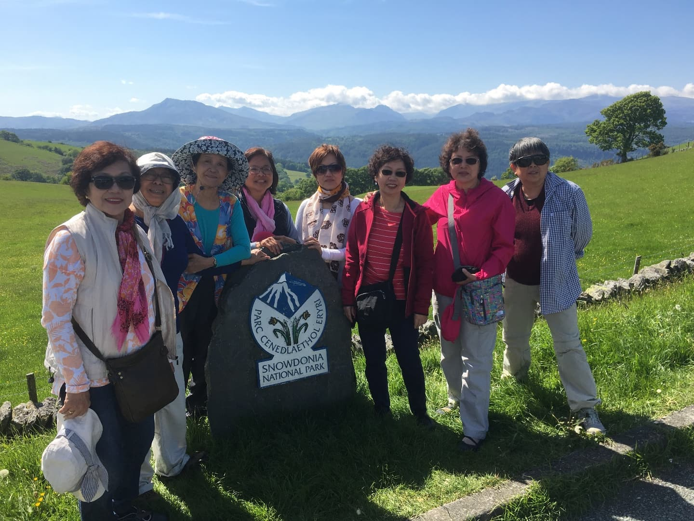

2 Day Tour Option
The best of the Snowdonia (Eryri) National Park capturing lakes and mountains, visiting Welsh riverside villages, along with the beautiful Isle of Anglesey, which provides a treasure trove of stunning historic and cultural sites to visit across the island.